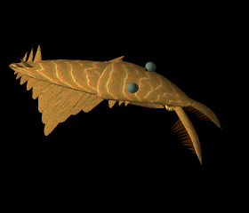

| 
Laggania cambria did not have the forward-placed eyes of Anomalocaris, which suggests that its main mode of hunting was by feeling for prey in the upper most layers of muddy ocean bottoms. This animated reconstruction includes small dorsal tail fins, which have never been seen in Laggania specimens. The anterior appendages are also proportionally over-large. |
Web links on
Anomalocaris INU
BUY NOW ON POOCOIN TELEGRAM |
| DESCRIPTION | The Alpha of Awe. The Brute of Brawn. The Cultivator of Class. The Duke of Domination. The Emperor of Eloquence. The Fiercest of Fighters. The Greatest of Glory. The Height of Heroism. The Imperator of Intellectualism. The Jarl of Justice. The King of Knights. The Lord of Loquaciousness. The Master of Mortality. The Naysayer of Noobs. The Overlord of Obituaries. The Prince of Passion. The Que-hagen of Quixote. The Ruler of Ruination. The Sultan of Smite. The Taskmaster of Trembles. The Undertaker of Ubiquity. The Vaeyen of Vociferousness. The Warranter of Weaklings. The Xenophobe of Xenogeny. The Yardmaster of Yesteryear. The Zhar of Zoroastrianism |